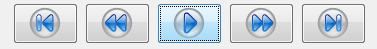
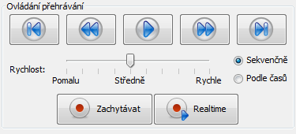
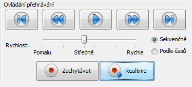
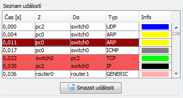
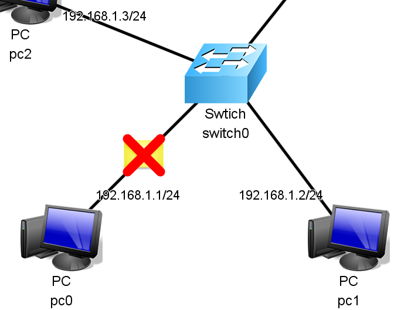
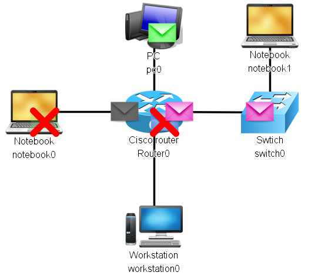
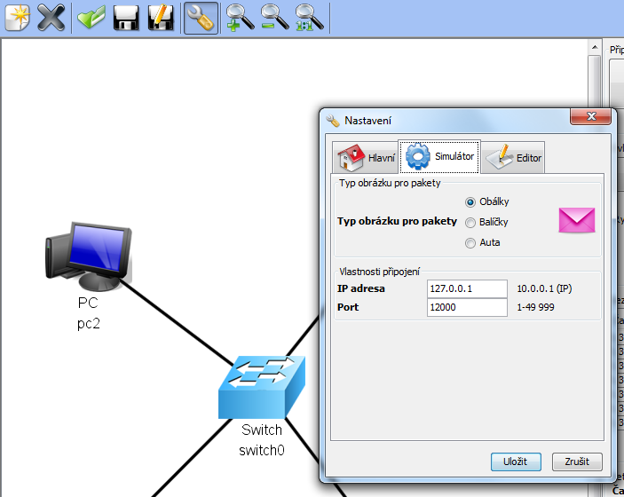

Přehrávání spustíte tlačítkem Play v panelu Ovládání přehrávání:
Během přehrávání můžete volně přecházet na následující, či předchozí události tlačítky v panelu Ovládání přehrávání, nebo kliknutím myší na konkrétní řádek v tabulce.
Rychlost přehrávání se nastavuje posuvníkem v panelu Ovládání přehrávání. Nastavenou rychlost bude mít vždy další započatá animace. Stávající animace doběhne beze změny rychlosti.
Události je možné přehrávat sekvenčně (po sobě) tak aby byla simulace přehledná. V tomto režimu je doba trvání animace paketu závislá na nastavené rychlosti a doby zpoždění na kabelu.
Události je také možné přehrávat v časech, v jakých byly zaznamenány, tzn. podle časových značek. V tomto režimu závisí délka animace opět na nastavené rychlosti a doby zpoždění na kabelu, ale může se stát, že uvidíte více animací najednou, protože přišly v krátkých časových rozestupech.
Realtime režim je zvláštní způsob zachytávání a přehrávání událostí. Události jsou přehrány v tom okamžiku, kdy jsou přijaty. V tomto režimu závisí délka animace opět na nastavené rychlosti a doby zpoždění na kabelu. Na následujícím obrázku je označené tlačítko pro spuštění Realtime režimu
Pokud se nějaký paket na straně serveru ztratí, je tato událost také zachycena a v tabulce je vidět následovně:
Na následujícím obrázku je vidět, jak jsou ztracené pakety vizualizovány:
Animace může vypadat například takto:
V aplikaci je možné v Nastavení změnit typ obrázku paketu
Další částí tutorialu je: Uložení a načtení seznamu událostí.